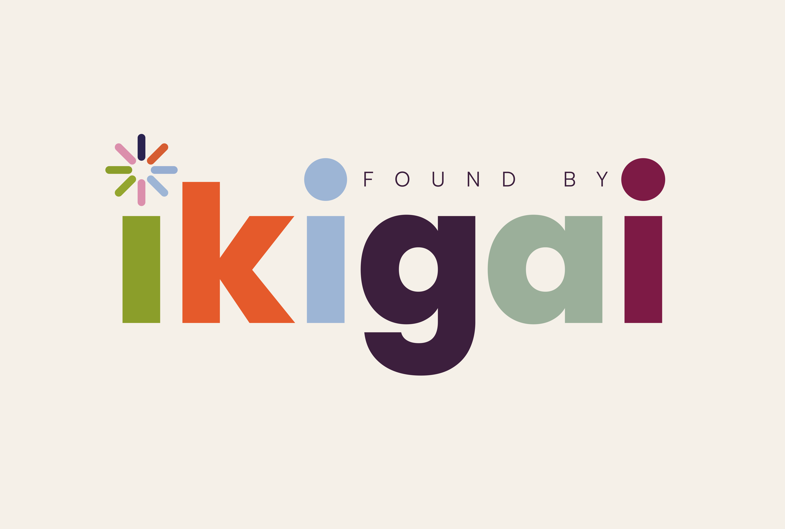

A free tool to help you find clarity on the path you actually want to take. No email, no data, no agenda.
If this helped you get a little more clarity, share it. Someone in your network is probably looking for the same thing.